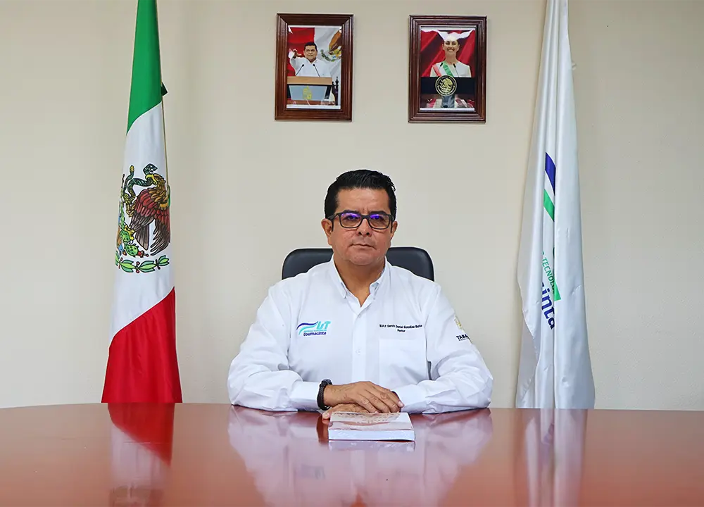

Mtro. Darvin Daniel González Baños
Rector de la Universidad Tecnológica del Usumacinta
Es un honor darles la más cordial bienvenida a nuestra comunidad universitaria. En la UT del Usumacinta nos dedicamos a formar profesionales de excelencia con valores humanos, comprometidos con el desarrollo sostenible de nuestra región.
Nuestro compromiso es brindar una educación de calidad que combine la teoría con la práctica, preparando a nuestros estudiantes para los desafíos del mundo actual. Aquí encontrarán no solo aulas y laboratorios, sino un espacio para crecer, innovar y transformar sus sueños en realidad.
Los invito a ser parte activa de esta gran familia universitaria, donde juntos construiremos un futuro mejor para Tabasco y para México.

Mtro. Darvin Daniel González Baños
Rector
Universidad Tecnológica del Usumacinta
Nuestra Institución
Fundada en 2010, la UT del Usumacinta se ha consolidado como una de las instituciones de educación superior más importantes del sureste mexicano, ofreciendo programas educativos de vanguardia en áreas estratégicas para el desarrollo regional.
Modelo Educativo
Implementamos el Modelo de Educación Dual que combina formación académica con experiencia en empresas, garantizando que nuestros egresados estén preparados para enfrentar los retos del sector productivo desde el primer día.
Vinculación
Mantenemos alianzas estratégicas con más de 100 empresas locales, nacionales e internacionales, facilitando la inserción laboral de nuestros estudiantes y fortaleciendo la transferencia de conocimiento.
Resultados
98% de nuestros egresados se encuentran trabajando en su área de formación dentro de los primeros 6 meses posteriores a su graduación, demostrando la calidad y pertinencia de nuestros programas educativos.
¿Listo para formar parte de nuestra comunidad?
Únete a la Universidad Tecnológica del Usumacinta y comienza tu camino hacia el éxito profesional.